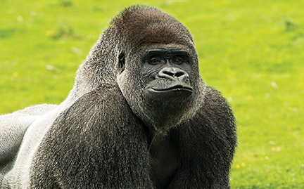

Gorilla
GORILLAS Gorillas are ground-dwelling, predominantly herbivorous apes that inhabit the forests of central Africa. The eponymous genus Gorilla is divided into two species: the eastern gorillas and the western gorillas, and either four or five subspecies. They are the largest living primates by physical size. The DNA of gorillas is highly similar to that of humans, from 95 to 99% depending on what is counted, and they are the next closest living relatives to humans after the chimpanzees and bonobos. Gorillas' natural habitats cover tropical or subtropical forests in Africa. Although their range covers a small percentage of Africa, gorillas cover a wide range of elevations. The mountain gorilla inhabits the Albertine Rift montane cloud forests of the Virunga Volcanoes, ranging in altitude from 2,200 to 4,300 metres (7,200 to 14,100 ft). Lowland gorillas live in dense forests and lowland swamps and marshes as low as sea level, with western lowland gorillas living in Central West African countries and eastern lowland gorillas living in the Democratic Republic of the Congo near its border with Rwanda.WHERE WILL YOU FIND THEM?
You will find the gorilla cage at GO12.